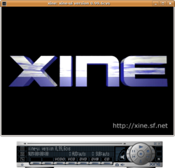
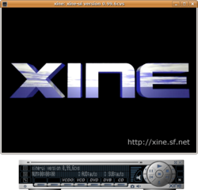

 
Titrat e filmit i kemi të përkthyera në mbi 20 gjuhë, që të mund ta shfaqni në Ditën e Lirisë së Software-it ose në takimet e grupit tuaj vendor të përdoruesve.
Për titrat përdorim formatin SubRip, që është i përputhshëm me të tërë lojtësit video software të lirë të njohur.